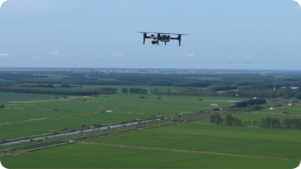

XAG M500 Remote Sensing Drone is designed for precision
agriculture, with the capability to fly autonomously and capture high
definition images with high-performance data processing. Partnering
with XAG M500, you can better understand your farm to enable timely
and effective actions.
Vision to Digital Farmland
Map precise
The XAG M500 can help build a
digital map of your farmlands, in
which each plot and each crop has
its own coordinate that allows
precise operation of autonomous
drones and robots.

Scout effortless
The XAG M500 can fly
autonomously at high-frequency to
capture overall farmland images.
Without getting their feet on the
ground, farmers can master every
change of their fields with ease
and take timely measures.
Grow smart
By taking advantage of third-party
AI software, the XAG M500 can
help you gain insight into plant
growth and identify crop
abnormity. Decisions are made
with science to enable variable-
rate spraying and fertilization.
The Smart Core to Agrifuture
SuperX 4 Pro, XAG's self-developed Intelligent Control System, are
equipped with multi-tasking ability to endow XAG M500 the power of
fully autonomous flight at cm-level accuracy. Real-time image stitching
allows map creation immediately after landing.
CM-level Positioning
Dual-antenna RTK + portable base station
Enhanced Flight Safety
AI fault prediction + emergency protection mechanism
30-hectare Real-time Image Stitching
6-core CPUs + NPU
Seeing the Unseen
Four switchable cameras can capture multi-dimensional data from field
overview to crops growth status. Reveal hidden but valuable information
to help manage your farm with lower operation cost.
XAG SRC1 Smart Remote Controller, with its built-in touchscreen and
XPilot APP, allows freely switch between autonomous flight and manual
control. Multiple flight planning modes are available to meet your needs
of various application scenarios. The 4G and Wi-Fi dual communication
system support stable and long-range internet connection.
XPilot APP⁵
Easy flight planning
4G + Wi-Fi Dual Link
Stable signal & image transmission
5.5" 800 Lumens HD Touchscreen
Clear visual under strong light
4.5h Duration⁶
Suitable for longer task
Field Mapping
HD map
Oblique Photography
3D map
POI Cruising
Target areas scouting
Strip Mapping
River & roadway inspection
Mapping Your Farm into Precision Agriculture
Weeds Control Practices
The XAG M500 can be used for weed
detection on crops, with the weed zone
identified and located via the third-party
AI software. Then a prescription map will
be sent to the XAG agricultural drones for
variable-rate spraying that can remove
weeds with less pesticide use.
Fertilization Management
The XAG M500 can collect crop growth
data and produce digital field maps to be
analysed by the AI software. The AI
prescription map will be generated and
guide the XAG agricultural drone to spread
fertilizers on where necessary. Improve
yields with reduced fertilizers.
Cotton Boll Opening Control
The XAG M500 can create an HD cotton
field map where the immature boll opening
can be discovered and tagged. When
receiving the labeled map, the XAG
agricultural drones will conduct defoliation
on target zones to facilitate large-scale
mechanical harvesting.
Note:
1. 2. 3. 4. Four cameras all featured: mechanical shutter max out at 1/2000s, 3-Axis gimbal, auto distortion correction, maximum 512 GB sd card supported.
2.Equipped with this camera, the M500 can capture 5 images at different angles rapidly before next vertical shoot, which is almost 5 times faster than traditional oblique photography when
other parameters are the same.
5. xml file is supported for different applications.
6. The specific performance may vary depending on the working environment, temperature, user habits, etc. Please use strictly in accordance with the official product guidelines.